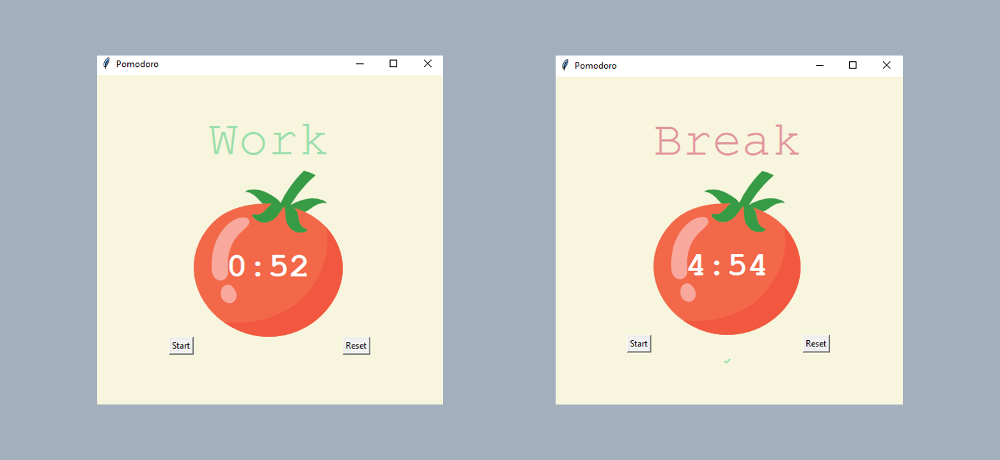

Pomodoro
Create custom database of questions thanks to API and let the user take a challenge against them. Funny way of learning uncommon knowledge. Application shows actual score, highlights correct(green) / uncorrect(red) answers and blocks buttons for a while so you can calmly check right answer.